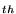
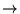

This handout covers the basics of programming in Haskell. Some of the details are specific to the Hugs-98 system and the WinHugs environment, although most of it should apply to other Haskell systems such as GHC (see http://www.haskell.org/ for more details on these and other implementations of the language). In comparison with other tutorials available on the web, the focus here will be on learning to work with recursion and some of the elementary data structures traditionally encountered in Computer Science II; it is not specifically about exploring the power of Haskell, which has many advanced features that we will not discuss.
Prelude> . This
means that the system is ready to evaluate expressions, calculator-style,
in the context of the standard collection of definitions known as
the prelude. The prelude defines many powerful operations on numbers,
strings, and lists. Try entering each of the following expressions at
the prompt, one line at a time, and figure out what the responses mean;
then test yourself by trying similar expressions and guessing what the
responses will be.
1+2*3 1+2^3 (1+2)^3 product [1, 2, 3, 4, 5] product [1 .. 5] quot (sum [1 .. 5]) (length [1 .. 5]) sum [1 .. 5] `quot` length [1 .. 5] [1 .. 5] ++ reverse [1 .. 5] "Hello" ++ "World" toUpper 'a' map toUpper "Hello" map sqrt [1 .. 5] map (^2) [1 .. 5] map (2^) [1 .. 5] map odd [1 .. 5] head [1 .. 5] tail [1 .. 5] (head [1 .. 5], head "Hello") zip [1 .. 5] "Hello"
To use functions beyond those defined in the prelude, you will need to
type them into a source file (a ``script'') and load them into Hugs.
From the Hugs prompt, type the command :edit followed by a
file name; for example, :edit I:\CSC122\Public\Thing.hs (the
leading colon is important--it is the signal to Hugs that this is a
system command rather than an expression to be evaluated). By default,
this will bring up Notepad to edit your file (it will ask if you want
to create it if it doesn't already exist; make sure you give it a path
to a directory in which you have write access). When you are done
entering your definitions, save the file and exit to return to Hugs.
It is recommended, though not strictly required, that Haskell scripts use
the file extension .hs; make sure that Notepad doesn't silently
add a .txt extension for you.
For practice, create a file named Fact.hs containing the following
definition:
fact 0 = 1 fact n = n * fact (n-1)
Once you have created a script, you load it into Hugs with the
:load command followed by your file name. For example, if your
personal folder is CSC12201, then you might load the above file by
entering :load I:\CSC122\CSC12201\Fact.hs. If all goes well,
Hugs will respond with a message listing both the prelude and your
file, and a Main> prompt. Now the definitions from your file
have been loaded into the system and are ready for use. With the above
function definition, you should now be able to enter an expression such
as fact 5 to compute the factorial of 5 (5!).
Integer.
Unlike the type int of C++, there is no upper limit to the size
of an Integer. For example, we may use the fact function
defined above to find 52! (which counts the number of ways to arrange
a deck of 52 playing cards):
Main> fact 52 80658175170943878571660636856403766975289505440883277824000000000000 Main>This 68-digit number is a value of type
Integer. Haskell will
happily work with numbers having thousands of digits, up to the limits
of your computer's memory. Arithmetic on large numbers is important in
applications such as cryptography, where schemes such as RSA encryption
are based on the ease of multiplying multi-hundred-digit numbers (and
the corresponding difficulty of factoring the result back into the
original numbers).
All of the usual arithmetic operations are available on Integers:
+, -, and *. Division with / is also
supported, although the result is not an Integer. To divide
a by b and get an Integer result, use the quot
function: quot a b. This gives the quotient; to get the remainder,
use rem a b (this is equivalent to the expression
a % b in C++). As with any Haskell function which takes two arguments,
these may be written as infix operators by surrounding the function name
with backwards single quotes: a `quot` b and a `rem` b.
Exponentiation, which is not a built-in operator in C++, is written with
the caret operator, ^; that is, ab is written a^b.
Just as it is sometimes convenient to write a function such as quot
between its arguments like an arithmetic operator, we also sometimes
need to use an operator like a function. By surrounding any operator in
parentheses you can do just that. For example, (+) is a function
which takes two arguments, so (+) 1 2 is the same as 1 + 2.
One useful extension of this is that we can specify one of the operands
by putting it in the parentheses, which produces a one-argument function
(since it still needs the second operand). The easiest way to see this
is with some examples:
Main> (1+) 2 3 Main> map (1+) [2, 4, 6] [3, 5, 7] Main> (2^) 5 32 Main> (^2) 5 25Note the difference between
(2^), which is a function that takes a
number and returns two to that power, and (^2), which is a function
that takes a number and squares it. The technical name for this operation
of applying a multi-argument function to one argument and producing a new
function that expects the remaining arguments is currying. It is
named after the logician Haskell Curry, who made good use of the technique
in his work on mathematical logic in the early
20 century. Oh, the Haskell language is also named after him....
Question: Name a function which takes a number and doubles it. What about a function that takes a number and divides it by 2 (and throws away the remainder)?
Bool represents truth conditions, either
True or False. It is essentially equivalent to the
bool type of C++. Comparison operators such as ==,
/= (not equal), <, >=, ..., return values of type
Bool. The standard logical operations are available:
1 < x && x < 10 is true if x is both greater than 1 and
less than 10; x == 2 || odd x is true if x is either equal to 2
or odd; and not (odd x) is true if x is not
odd (this can also be written even x).
Given a boolean value, the natural way to use it is to make a decision
between two choices. Haskell has a conditional expression similar to
that found in most languages: if b has type Bool and
x and y are expressions of the same type, then
if b then p else q is an expression that evaluates to p
when b is True and q when b is False.
For example, if 1 < x && x < 10 then "OK" else "Out of Range"
will evaluate to the string "OK" whenever x is strictly
between 1 and 10, and "Out of Range" otherwise.
Question: Write an expression just using if-then-else,
the constants True and False, and the variables x
and y which is equivalent to x && y. That is, it should
produce True when x and y are both True,
and False otherwise, but you may not use the built-in &&
operator.
Char can represent any single
character. It is essentially identical to the char type in C++,
even using the same single-quote syntax: 'a' is the character
a. If you want a single-quote character, Haskell uses the same
backslash escape mechanism as C++: '\''. Here are some more
escape codes for characters that are otherwise hard to type:
\n |
newline | \r |
carriage return |
\t |
tab | \v |
vertical tab |
\a |
bell | \f |
form feed |
\b |
backspace | \\ |
backslash |
\' |
single-quote | \" |
double-quote |
Char does not automatically convert to an integer.
If you want the ASCII code for a character, use the ord function.
To convert from an ASCII code back to a character, use the chr
function. For example, ord 'A' returns 65, while chr 48
gives '0'.
Question: Given that the ASCII codes of the digits are
consecutive numbers from 48 for '0' to 57 for '9', write an
expression that takes a digit d of type Char and produces
the corresponding Integer.
Haskell language,
the syntax for strings is essentially the same as in C++. That is, a
string constant is a sequence of characters surrounded by double-quotes:
"Like this". The same escape codes as listed above may be used
to embed ``difficult'' characters in strings:
"My favorite string is \"Hello World\"." However, unlike C and
C++, where strings are arrays of characters (reflecting the importance
of the array in those languages), in Haskell a String is a
list of elements of type Char. We will see more about
lists below, but one of the implications for strings is that the common
operation of appending two strings is achieved by using the list append
operator, ++. For example, "Hello" ++ "World" evaluates
to "HelloWorld".
A string with special characters such as newline will be displayed by
the interactive system as a string containing the corresponding escape
code (that is, it will print "Hello\nWorld" instead of printing
an actual newline character between the words). To see the effect of
these characters, from the interactive prompt you may use the function
putStr to print out the actual sequence of characters contained
in a string (for complicated reasons having to do with the fact that
putStr is not a pure, ``valued'' function, there are restrictions
on where it may be used; at the top level of an expression typed into
the system prompt is one of the places it is allowed).
Question: Find a string s such that putStr s
produces the following output:
"D'oh!!"
-- Homer Simpson
(42, 'a', "Hello", True). There may be any number of values
(even none at all) in a tuple; the special case of two values is called
a pair. The order of the values matters, so the pair
(1, 2) is different from the pair (2, 1). The type
of a tuple is written as a tuple of types, so these pairs each have
type (Integer, Integer), while the first tuple above has type
(Integer, Char, String, Bool).
You may ask Haskell to tell you the type of an expression with the command
:type (as with all of the system commands, this may be abbreviated
to one letter as :t). Enter the line :type ('a', False) and
the system will respond ('a', False) :: (Char, Bool). The symbol
:: is read ``has the type''; it may be used in expressions and
definitions to emphasize that a particular value has the given type.
If you ask for the type of an expression involving numbers, you are likely
to get a more general answer than you probably expect. For example,
entering :t 1 produces the response 1 :: Num a => a.
The way to read this is ``1 has the type a, where a
is a type belonging to class Num.'' There are several types
in class Num, including Integer, and it is possible to
define more (although we will not be doing this). All of the types in
this class support common operations on numbers such as + and
*, so the system doesn't commit to choosing a particular numeric
type until it knows which one you want. For our purposes, you will just
need to be aware that sometimes types will be displayed with this extra
``class context'' (the Num a => part above); it should not get in
the way of the things we will be doing (except it might make the error
messages seem a little more cryptic).
Question: Find an expression which has the type
(Bool, Char, String). Now find an expression whose type is
((Bool, Char), String) (note the extra parentheses).
The basic way to write a list of values is to enclose them in square
brackets, separated by commas. For example, [1, 2, 3, 4, 5] is
a list of five numbers, starting with 1 at the head of the list.
Just as with tuples, the order matters, so [2, 5, 3, 1, 4] is a
different list, even though it contains the same values. Since each of
these values is of type Integer, we write the type of the list
as [Integer] (although if you try this example, it will say it
has type Num a => [a]). There is an abbreviation for lists which
consist of a regular sequence of values: [1 .. 5] gives the list
[1, 2, 3, 4, 5]. You can get sequences that step by something
other than 1 by listing a second element at the beginning:
[1, 4 .. 100] is the list that counts from 1 to 100 by threes, and
[10, 9 .. 1] is the list [10, 9, 8, 7, 6, 5, 4, 3, 2, 1].
As mentioned above, a String is just a list of Chars.
The notation "Hello" gives exactly the same list as
['H', 'e', 'l', 'l', 'o']. Note that a list of Strings
is not the same; ["Hello", "World"] is a list with two
elements, each of which is a list of characters (coincidentally, each
one is five characters long, but recall that a given type of list can
have any number of elements). The type of ["Hello", "World"]
is [String]; since String is a synonym for [Char],
this can also be written [[Char]] (a list of lists of characters).
The fundamental operations on lists allow us to take them apart and
put them together. Given a list, we may remove the first element
with head, and obtain the list of all except the first
element with tail: head [1, 2, 3, 4, 5] is 1,
while tail [1, 2, 3, 4, 5] is [2, 3, 4, 5]. A new list may
be formed from a head element and a tail list with the colon operator:
for example, 1 : [2, 3, 4, 5] produces [1, 2, 3, 4, 5].
An entire list may be put together in this way, with the initial tail
list being the empty list, []. That is, [1, 2, 3, 4, 5]
is equivalent to 1 : 2 : 3 : 4 : 5 : [] (the colon operator is
applied from right-to-left, so we don't need parentheses for this to work
correctly). An empty list of Char may also be written "",
so "Hello" is short for 'H' : 'e' : 'l' : 'l' : 'o' : "".
If you ask the type of [], the system will say [] :: [a],
which is read ``[] has the type list of a, where a
can be any type'' (there is no class context qualifying a).
Trying to take the head or tail of an empty list produces
an error (try head (tail [1])).
We have seen a number of other operations on lists already. The operator
++ will append two lists of the same type, so
[1, 2] ++ [3, 4, 5] produces [1, 2, 3, 4, 5]. The
reverse function produces a list with all the same elements as
its argument, but in the opposite order: reverse "Hello" gives
"olleH". The length function counts how many elements are
in a list; if you do length [], the answer is 0, while
length ["Hello", "World"] is 2 (and
length (head ["Hello", "World"]) is 5). Given lists of
numbers, sum and product will add or multiply all of the
numbers together.
A more interesting operation is map, which takes two arguments.
The first is a one-argument function and the second is a list; map
applies the function to each of the elements of the list and returns
the list of results. For example, map (^2) [1 .. 10] produces
a list of the squares of the numbers from 1 to 10; it is equivalent to
evaluating [1^2, 2^2, 3^2, ..., 10^2] (the ... here is not
in the syntax of Haskell; I just didn't feel like typing all ten terms).
One more function on lists that we have seen is zip. When
zip is applied to a pair of lists, it creates a list of pairs
of corresponding elements from the two lists, until one or both of the
lists is exhausted. That is, zip [1, 2, 3] ["Hello", "World"]
produces the list [(1, "Hello"), (2, "World")]; the 3
is ignored, because there was no matching element in the second list.
Lists may be compared for equality (as long as the individual elements can be compared); two lists are equal if they have the same length and if corresponding elements are equal.
Question: Write an expression that tests whether a string
s is a palindrome (that is, it reads the same forwards as
backwards).
map example above, Haskell allows
functions to be used as values and passed as arguments to other functions.
Haskell is known as a ``functional'' language, partly because of this
treatment of functions as first-class values (that is, they are treated
just like the other basic types of the language). The type of a function
which takes an argument of type a and produces a result of type
b is a -> b, which is an ASCII approximation of the usual
mathematical notation
a  b. If a function
takes several arguments, we think of it as taking one at a time; at each
stage, the result is another function that expects the remainder of the
arguments. For example, quot takes two Integer arguments,
so we may use it as quot 10 2. This may be parenthesized as
(quot 10) 2, where the result of quot 10 is a function that
takes another Integer and produces the result of dividing that
number into 10. Therefore, the type of quot is
Integer -> (Integer -> Integer). The -> operator groups
from right-to-left, so we don't need the parentheses here and may write
the type simply as Integer -> Integer -> Integer. You read
this from left-to-right, so it says ``apply it to an Integer,
then apply the result to another Integer, and then the result of
that will also be an Integer.''
The type of map can be found by the same method, although it
takes some practice to read it correctly. map takes a function
of any type a -> b, and produces a result which may be applied
to a list of type [a]; the result, after applying the function
to each element of the list, will be of type [b]. Therefore, the
system will inform us that map :: (a -> b) -> [a] -> [b] (try it).
Question: What is the type of zip?
The basic operation for a function is applying it to an argument.
If f is a function, then f x is the result of applying it to
the argument x (languages such as C++ require that this be written
as f(x), but function application is such an essential part of
Haskell that the parentheses around the argument have been made optional).
Another common operation on functions is composing two functions to form
a new one: if f :: b -> c and g :: a -> b, then
f . g is the composite function of type a -> c; applying it
to an argument x, written (f . g) x (the parentheses are
necessary here, because function application has higher precedence than
any operator), produces the same result as f (g x). The usual
mathematical notation for f . g is
fog.
data definition, which names a new type and lists
all of the fundamental ways of constructing new values of the type.
The standard way of defining new operations is then to give a series of
rules that cover each case of how an argument could have been constructed;
since all of the constructors are listed in the data definition,
it is usually sufficient to provide one rule for each constructor.
Direction type, which may be
North, East, South, or West. Here is an
appropriate definition:
data Direction = North | East | South | WestThis says that the only way to construct a value of type
Direction
is to give one of the four main compass directions; these four
constructors name the four values of the type. Now suppose that we want
to define a function degrees which converts a Direction
into the corresponding numerical compass heading, where 0o is
north, 90o is east, etc. The following set of rules will cover
all the cases:
degrees North = 0 degrees East = 90 degrees South = 180 degrees West = 270That's it. Put these definitions in a file and load them into Hugs. Now when the system encounters an expression such as
degrees West, it can evaluate it by looking at the rules, producing
the result 270. We have just defined a new function
degrees :: Direction -> Integer. By the way, now is an appropriate
time for a word about naming. Types and constructors have to have names
starting with upper-case letters, while functions and variables have to
start with lower-case letters; the rest of the name can be any sequence
of letters or digits. There are also rules for names of operators,
which are built out of non-alphanumeric characters, but we will not need
them for this class.
There are a few extra bits of information that can be included with
these definitions to make our lives easier. Here is a complete source
file for the Direction type:
data Direction = North | East | South | West
deriving (Show, Eq, Enum)
degrees :: Direction -> Integer
degrees North = 0
degrees East = 90
degrees South = 180
degrees West = 270
The line deriving (Show, Eq, Enum) says that the system should add
default definitions of operations needed to support displaying values of
the type, comparing values of the type for equality, and enumerating lists
of values of the type. For example, it allows us to write expressions
such as North == East (which is False) and
[East .. West] (which is [East, South, West]). Other
choices for this list of automatically defined operations include
Ord, which gives comparison operators such as <, and
Bounded, which defines values minBound and maxBound
of the type; I didn't include these since they don't seem appropriate
for compass directions (we don't usually think of north as being less
than east, or of west being the maximum direction).
The line above the rules for degrees is a type declaration;
it is of the same form as the result of the :type command,
and it provides extra documentation about the use of the function,
as well as a check that the function really does have the desired type
(the system will give you an error message when you load the file if
you declare the wrong type for a function).
An example of a built-in enumeration is the type Bool. Here is
an excerpt from the standard prelude:
data Bool = False | True
deriving (Eq, Ord, Enum, Show, Bounded)
not :: Bool -> Bool
not True = False
not False = True
As you can see, it is very similar to the Direction type. There
are exactly two values of type Bool, False and True.
The designers of the prelude made the decision to consider False as
less than True, so they listed more options in the deriving
line. The not function has a particularly simple definition,
since it only has to consider two cases for its argument. The Char
and Integer types are also handled conceptually as enumerations,
although they have many more cases (infinitely many for Integer).
Question: Define a function
rotateDirLeft :: Direction -> Direction which will take
North to West, East to North, etc.
data definition may also take arguments.
For example, suppose we want a type to represent colors. We might use
the following:
data Color = Red | Green | Blue
| Yellow | Cyan | Magenta
| White | Black
| RGB Integer Integer Integer
deriving (Eq, Show)
This is like an enumeration, except the last constructor can take three
Integers to represent an arbitrary color by giving its red, green,
and blue components. We could define a function rgb of type
Color -> (Integer, Integer, Integer) which converts any value
of type Color into a triple of red, green, and blue components.
Here is an appropriate list of rules:
rgb Red = (255, 0, 0) rgb Green = ( 0, 255, 0) rgb Blue = ( 0, 0, 255) rgb Yellow = (255, 255, 0) rgb Cyan = ( 0, 255, 255) rgb Magenta = (255, 0, 255) rgb White = (255, 255, 255) rgb Black = ( 0, 0, 0) rgb (RGB r g b) = ( r, g, b)Note the need for parentheses around the argument in the last case, because the constructor
RGB needs to have three arguments
associated with it.
The name for this kind of function definition by giving rules is a
``pattern-matching'' definition. Each rule gives a pattern that will be
matched against an argument; if the match is successful, then the rule
is used; otherwise, the next rule in the list is tried. For no-argument
constructors, such as Red, the name of the constructor is the
entire pattern. For constructors taking arguments, the pattern is formed
by giving the constructor name followed by enough variables to match
whatever values might come along with that constructor. For example,
if we evaluate rgb (RGB 64 128 192), the ninth rule will succeed
by matching r to 64, g to 128, and b
to 192. These variable matches, also known as bindings,
are roughly equivalent to associating actual arguments with formal
parameters in calling a function in C++; for the course of the execution
of the function, the variables will contain the values passed in from
the caller (in C++ this has to be qualified to say ``unless the variables
are assigned different values in the course of execution''; Haskell has
no notion of changing the value assigned to a variable--this is part
of what makes the functions so pure, since we don't have to worry about
changing the state of variables--so this qualification is not necessary).
Therefore, in evaluating the right-hand-side of the rule, the expression
(r, g, b) becomes (64, 128, 192); this is the result of
the function.
Although they depend on some special syntax, the built-in tuple types
are an instance of this kind of data type. For example, we may define a
new type that is essentially equivalent to the type (Bool, Char)
as follows:
data BoolChar = BoolChar Bool Char
deriving (Eq, Show)
first :: BoolChar -> Bool
first (BoolChar b c) = b
second :: BoolChar -> Char
second (BoolChar b c) = c
The functions first and second mirror the built-in functions
fst and snd which extract the two components of a pair.
That is, we would write an expression such as
first (BoolChar False 'x') to mirror the standard expression
fst (False, 'x'); each evaluates to False.
The prelude does not provide functions analogous to fst and
snd for other tuple types, because it is more common to extract
the parts of a tuple by pattern matching. For example, suppose we want
to write a function
brightness :: (Integer, Integer, Integer) -> Integer which takes
a triple of Integers, as produced by the rgb function
above, and returns the average of the three components. It may be
defined as follows:
brightness (r, g, b) = (r + g + b) `quot` 3Evaluating
brightness (rgb Cyan) first applies the rgb
function to the argument Cyan, producing the triple
(0, 255, 255). Then it applies the brightness function to
this result: brightness (0, 255, 255). This matches the rule for
brightness, binding 0 to r, 255 to g,
and 255 to b. Finally, it plugs these values into the
right-hand-side, producing (0 + 255 + 255) `quot` 3, which gives
170 as the final result.
Question: Give a direct definition of a function
colorBrightness :: Color -> Integer, such that
colorBrightness c produces the same result as
brightness (rgb c) for any Color value c (but
without using the brightness or rgb functions).
Path
type:
data Path = End | R Path | L Path | U Path | D Path
deriving (Eq, Show)
The only wrinkle needed to support this is to allow a similar recursion
when defining a function--we will allow the use of the function being
defined on the right-hand-side of a rule, usually applied to a variable
that was bound to another instance of the type when matching one of the
recursive constructors. For example, recall the rotateLeft
function on Paths, which changed all of the path segments to be
rotated 90o counter-clockwise:
rotateLeft End = End rotateLeft (R p) = U (rotateLeft p) rotateLeft (L p) = D (rotateLeft p) rotateLeft (U p) = L (rotateLeft p) rotateLeft (D p) = R (rotateLeft p)For each of the recursive constructors, which build a longer path by adding a segment onto the beginning of another path, we give a rule that says how to rotate the added segment, and then we make a recursive call to
rotateLeft to rotate the rest of the path. The base case is where
the recursion bottoms out, in this case at the empty path End.
The canonical example of a recursive data type is the built-in list
type. Indeed, we can frequently ``code up'' other recursive types
by representing them as lists--you should be able to imagine using
[Direction] as a replacement for Path, where we might
write [East, North, East, South] instead of (R.U.R.D) End.
Question: How would you define
rotateDirListLeft :: [Direction] -> [Direction] to perform the
analogous operation to rotateLeft :: Path -> Path? Try to use
functions we have already defined.
Although the syntax is not quite legal, you should imagine the list type
[a] as being defined by
data [a] = [] | a : [a]
deriving (Eq, Show)
That is, a list of values of type a is either an empty list,
[], or the result of using the colon operator to add a value of
type a onto the front of another list of values of type a.
Here is the example from class of defining our own version of the
length function:
len [] = 0 len (x : xs) = 1 + len xsNote how the structure of the function definition exactly follows the structure of the
data definition. To find the length of a list
with one element (x) added to it, we add one to the length of
the shorter list, obtained by recursively calling the len
function on the tail (xs). That rule, plus the base case for
the empty list, is all we need to define the function.
Question: Write a function
countVertical :: [Direction] -> Integer which counts how
many ``vertical'' segments (North or South) are in
a Direction list. For example, evaluating the expression
countVertical [North, East, North, South, West] should produce
3.
For another example, here is the definition of a listMap function
which is equivalent to the built-in map function:
listMap f [] = [] listMap f (x : xs) = f x : listMap f xsReading this off in words, it says that the result of mapping a function
f over an empty list is just an empty list, while mapping f
over a list that starts with x is the list with f x at
the head and the result of mapping f over the rest of the list
as the tail.
Question: Define your own version of the zip function.